+++
title = "Tasarımda Malzeme: Metal Levhalar"
description=""
url="sayi-8/tasarimda-metal-sac-levhalar"
aciklama="Bir diğer adıyla sac metal, endüstriyel işlemle; ince, düz parçalara dönüştürülen metaldir. Sac, metalin kullanılan temel biçimlerinden biridir. Sayısız günlük nesne sac metalden üretilir."
type="sayfa"
thumb="/img/metal-levha-thumbnail.jpg"
date = "2021-04-01"
sayi=["08"]
sayfa="02"
yazar=["eylul ecem sogutlu"]
tags= ["ana sayfa", "dergi", "tasarimda malzeme"]
+++

<div class="container">
   <p>
      Bir diğer adıyla sac metal, endüstriyel işlemle; ince, düz parçalara
      dönüştürülen metaldir. Sac, metalin kullanılan temel biçimlerinden
      biridir. Sayısız günlük nesne sac metalden üretilir. Kalınlıkları önemli
      ölçüde değişkendir; aşırı ince levhalar folyo veya yaprak olarak kabul
      edilir ve 6 mm&#39;den (0,25 inç) daha kalın parçalar çelik levha veya
      &quot;yapısal çelik&quot; olarak kabul edilir. Folyolar, levhalar ve
      plakalar hemen hemen aynıdır, tek fark kalınlıktır. Kalınlık 3 şekilde
      ölçülür: milimetre, mil ve göstergeler. Milimetre oldukça basit birim olsa
      da, miller ve göstergeler yalnızca mühendislik ve imalatta yaygındır.
   </p>
   <p>
      En başta otomotiv sektöründe kullanılan levha saclar, daha çok kamyon ve
      otomobillerin kaportalarının üretiminde kullanılmaktadır. Bu saclar, aynı
      zamanda uçak, vagon, lokomotif gövdelerinin imalatında da kullanılma alanı
      bulmaktadır. Ev ya da işyerlerinde kullanılan buzdolapları ya da dondurucu
      gibi beyaz eşyalarda levha saclardan meydana gelir. Yanı sıra sac
      levhalar, ev mobilyasında veya aksesuarlarında da kullanımı yaygındır.
   </p>

   <hr>
   <h2>Sac Metal için Şekillendirme İşlemleri</h2>
   <div class="row">
      <div class="col-md-6">
         <p>
            {{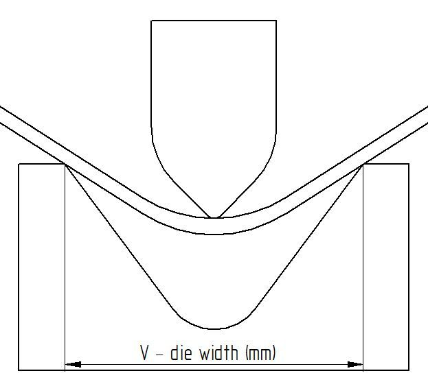}}
         </p>
         <p>
            {{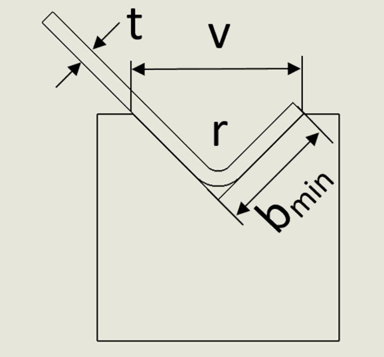}}
         </p>
      </div>
      <div class="col-md-6">
         <h3>Sac Bükme</h3>
         <p>
            Bükme, sac metalin bükme gerilimi uygulanarak istenen şekle
            dönüştürüldüğü bir şekillendirme işlemidir. En yaygın bükme şekli
            V-bükmedir. Tabakaya istenen formu vermek için V şeklinde bir kalıp
            ve bir zımba presleri ile birlikte kullanılır.
         </p>
         <p><strong>Minimum Bükülme Uzunluğu (V)</strong></p>
         <p>
            V kalıbı genellikle metal levhanın kalınlığının 5x ila 8x&#39;i
            olacak şekilde belirlenir. Gevrek malzemeler, 8x ila 12x aralığında
            V kalıpları gerektirebilir.
         </p>
         <p><strong>Minimum Bükülme Yarıçapı (r)</strong></p>
         <p>
            Minimum bükülme yarıçapı gereksinimleri, uygulamalara ve malzemeye
            bağlı olarak değişebilir. Havacılık ve uzay uygulamaları için
            değerler daha yüksek olabilir. Yarıçapın önerilenden daha az olması,
            yumuşak malzemede malzeme akışı sorunlarına ve sert malzemede
            kırılmaya neden olabilir. Bu gibi durumlarda kırık meydana
            gelebilir. Minimum iç bükülme yarıçapının malzeme kalınlığının en az
            1 katı olması tavsiye edilir.
         </p>
         <p><strong>Minimum Flanş Uzunluğu (b)</strong></p>
         <p>
            Bu, kıvrımın minimum uzunluğudur. Flanş, tamamen oluşturulduktan
            sonra kalıbın tepesine ulaşacak kadar uzun olmalıdır. Bükme işlemi
            yapılmadan önce malzemenin minimum flanş uzunlukları bilinmelidir.
         </p>
         <p><strong>Malzeme Kalınlığı (t)</strong></p>
         <p>
            Malzemenin kalınlığı v açıklığı gibi tonajla orantılı değildir.
            Bunun yerine bükme kuvveti, kalınlığın karesiyle ilişkilidir. Bunun
            anlamı, malzeme kalınlığı ikiye katlandığında gerekli tonajın 4 kat
            artmasıdır.
         </p>
      </div>
   </div>

   <div class="row">
      <div class="col-md-6">
         <p>
            {{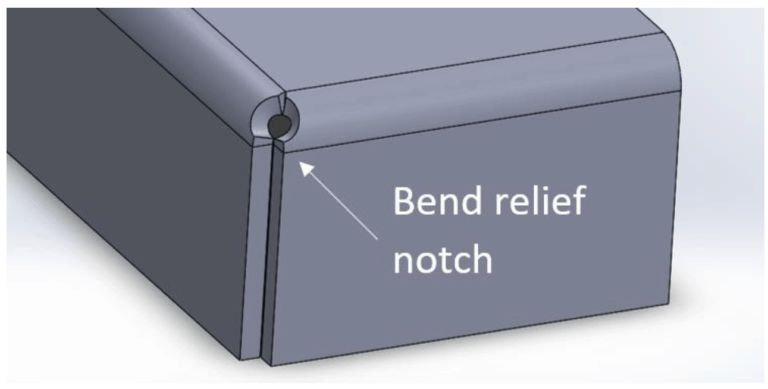}}
         </p>
      </div>
      <div class="col-md-6">
         <p><strong>Viraj Giderme</strong></p>
         <p>
            Bir kenara yakın bir bükme yapıldığında, bükülme rahatlığı
            verilmediği sürece malzeme yırtılabilir. Daha güvenli bükülme
            yapılabilmesi için metal levhanın kenarında dairesel bir halka
            oluşturulur. Yırtılmayı önlemek için rölyef çentiği atılmıştır.
            Bükülme çentiği malzeme kalınlığı + bükülme yarıçapından daha derin
            olmayacaktır.
         </p>
      </div>
   </div>

   <div class="row">
      <div class="col-md-6">
         <h3><strong>Hidroforming</strong></h3>
         <p>
            Hidroforming, metal levhaları istenen şekle getirmenin yenilikçi bir
            yoludur. Bu işlemde metal bir kalıbın üzerine yerleştirilir, ancak
            levhayı şekillendirmek için zımba yerine yüksek basınçlı sıvı
            kullanılır. Bu işlemle daha kısa sürede daha karmaşık parçalar
            oluşturulabilir. Aynı zamanda nispeten daha ucuzdur ve daha az iş
            gerektirir. Hidroforming ayrıca paslanmaz çelik, alüminyum, karbon
            çeliği, pirinç ve değerli metaller gibi hemen hemen tüm malzemelerle
            uyumludur. Eşleşen kalıplar genellikle gerekli olmadığından,
            geleneksel olmayan şekiller oluşturmak için hidroforming
            kullanılabilir.
         </p>
      </div>
      <div class="col-md-6 mt-md-5">
<div class="embed-responsive embed-responsive-16by9">
   <iframe class="embed-responsive-item" src="https://www.youtube.com/embed/vMwi5UBCCM0" allowfullscreen></iframe>
</div>
      </div>
   </div>

   <hr>
   <div class="row">
      <div class="col-md-6">
         <p>
            {{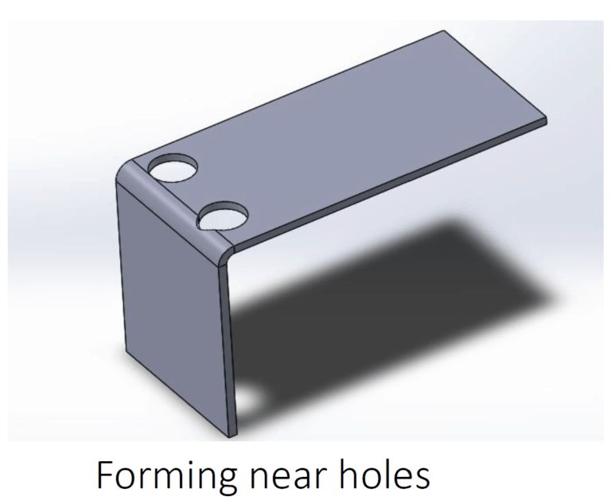}}
         </p>
      </div>

      <div class="col-md-6">
         <h3>Delme</h3>
         <p>
            Bir deliğe çok yakın bir bükülme yapıldığında, delik deforme
            olabilir. Bu problem nedenle gözyaşı şeklinde olan bir delik
            oluşmaktadır. Genel bir diğer kural olarak, malzemenin dışından
            kesiğin dibine kadar olan mesafe, hava bükme kuvveti çizelgesinde
            belirtilen minimum flanş uzunluğuna eşit olmalıdır.
         </p>
         <p>
            Sac metal tasarımlarda iki ekstrüde delik arasında belirli bir
            mesafe bırakılmalıdır. Ekstrüde deliklerin çok yakın olması metal
            deformasyonuna neden olabilir. İki ekstrüde delik arasındaki minimum
            mesafenin sac kalınlığının altı katı olması tavsiye edilir
         </p>
         <p>
            Sac parçadaki deliğin çapı çok küçük olmamalıdır, delme işlemi ile
            küçük delikler oluşturulur ve küçük delikler yapmak için küçük
            boyutlu zımbalar gerekir. Sac metaldeki küçük delik boyutu, daha
            küçük boyutlu delme aleti gerektirir ve bu da işlem sırasında
            kırılmaya neden olabilir. Delik çapının sacın kalınlığına eşit veya
            daha fazla olması tavsiye edilir.
         </p>
      </div>
   </div>

   <h3>Lazer Kesim</h3>
   <div class="row">
      <div class="col-md-6">
         <p>
            Lazer kesim, farklı metalleri kesmek için lazer kullanan bir üretim
            türüdür. Lazer, malzemeyi kolayca yakan yüksek bir enerji ışınına
            sahiptir. Lazer kesim, yüksek güçlü bir lazeri optik aracılığıyla
            yönlendirerek çalışır. Lazerler, kesiklerin şeklini ve konumunu
            belirlemek için bilgisayar sayısal kontrollü programlama CNC veya G
            kodunu izlemek için bir hareket kontrol sistemi kullanılır. Lazer
            kesimi kullanmanın avantajları ve dezavantajları vardır. CO2
            lazerler daha gelenekseldir ve daha kalın malzemeleri kesebilir,
            ancak fiber lazerler kadar hassas bir kesim sağlamaz. Fiber lazerler
            genellikle daha ince malzemeleri kesebilir ve CO2&#39;den çok daha
            yüksek kesme hızlarına sahiptir.
         </p>
      </div>
      <div class="col-md-6">
         <div class="embed-responsive embed-responsive-16by9">
            <iframe class="embed-responsive-item" src="https://www.youtube.com/embed/WcmZCujM5Vw" allowfullscreen></iframe>
         </div>
      </div>
   </div>

   <p>
      Bütün bu adımlardan başarıyla geçen metal levhanın, tasarımcıların
      dokunuşlarıyla nasıl bir malzeme olmaktan çıkıp bir ürüne dönüştüğüne göz
      atalım.
   </p>
   <hr>
   <h2>EDGE Sandalye</h2>
   <div class="row">
      <div class="col-md-6">
         <p>
            {{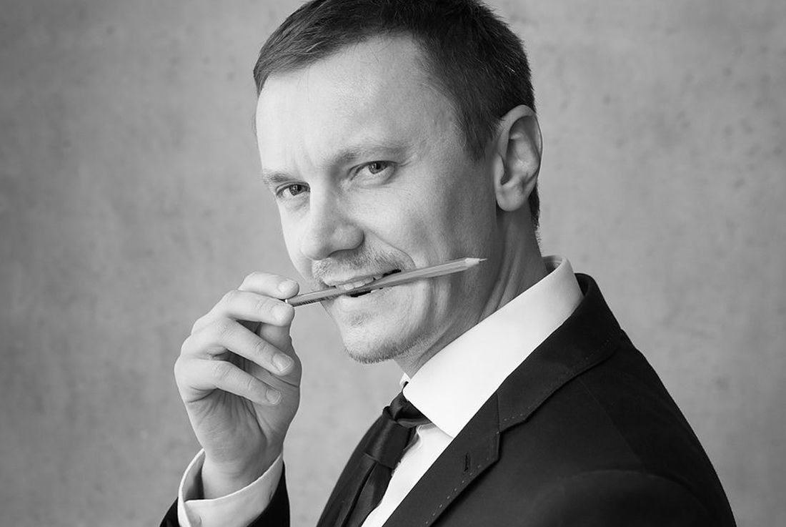}}
         </p>
      </div>
      <div class="col-md-6">
         <p>
            Çek Cumhuriyeti&#39;nin en büyük tasarım stüdyosu olan NOVAGUE
            tasarım stüdyosunun kurucusu ve sahibi Peter Novague, &#39;Prag
            Sanat, Mimarlık ve Tasarım Akademisi&#39;nden mezun oldu ve burada
            daha sonra Stüdyo Müdürü Asistanı oldu. Ayrıca Almanya&#39;daki
            Duisburg Essen Üniversitesi&#39;nde endüstriyel tasarım ve
            Bratislava&#39;daki Güzel Sanatlar ve Tasarım Akademisi&#39;nde
            ulaşım tasarımı okudu.
         </p>
         <p>
            Peter Novague, müşterileri için istisnai estetiğe sahip işlevsel ve
            kullanıcı dostu ürünler geliştirmek amacıyla 2008 yılında Novague
            Design Studio&#39;yu kurdu.
         </p>
      </div>
   </div>
   <div class="row">
      <div class="col-md-6">
         <blockquote>
            <p>
               &quot;Gördüğümüz dünya gereksiz şeylerle dolu. Bunu kaotik ve
               kafa karıştırıcı buluyoruz. Tasarım dünyası da bu gerçeklik
               imajına yansıyor. Amacımız bu ortama sadelik getirmek.&quot;
            </p>
         </blockquote>
         <p>
            EDGE sandalye origamiden ilham alan istiflenebilir alüminyum
            sandalyedir. Sandalyenin aldatıcı derecede basit bir önerisi var:
            alüminyum plakadan lazer kesim, daha sonra tasarımın katı ergonomik
            parametrelerine göre bir komaksit kaplama ile bükülüp ve
            kaynaklanması. Sandalye, altı parlak renktedir ve olası yüzey
            modifikasyonlarında yapılabilir, hafif tasarımı ile daha fazla
            kullanım kolaylığı için istiflenebilir. Novague&#39;in EDGE
            sandalyesi 2012 Red Dot Tasarım Ödülü&#39;nü kazanmıştır.
         </p>
      </div>
      <div class="col-md-6">
         <p>
            {{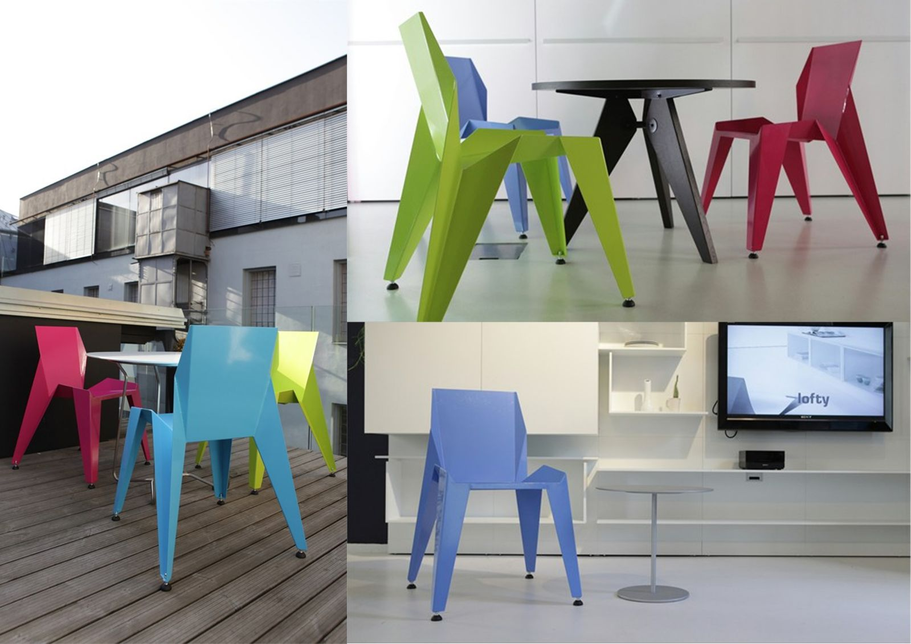}}
         </p>
      </div>
   </div>

   <hr>
   <h2>GB Sandalye</h2>
   <div class="row">
      <div class="col-md-6">
         <p>
            Alexandre Berthiaume tasarımı GB sandalye, basit kesilmiş ve
            katlanmış bir alüminyum levhadan yapılmıştır. Sonunda elektrostatik
            bir boyama ile renklendirilir. Aynı zamanda bu sandalye çevrecidir
            çünkü % 99 geri dönüştürülebilir. Örneğin geri dönüşümü istendiğinde
            1650 içecek kutusuna dönüşebilir. İstiflenebilirliğinin yanı sıra bu
            sandalye karbon fiber, kontrplak veya akrilikten de yapılabilir bir
            forma sahiptir.
         </p>
      </div>
      <div class="col-md-6">
         <p>
            {{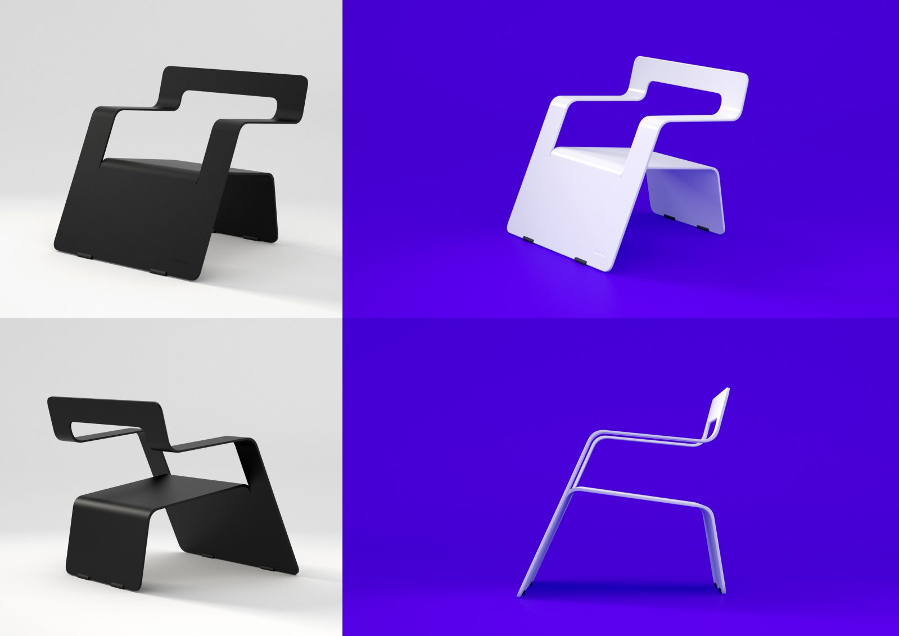}}
         </p>
      </div>
   </div>

   <hr>
   <h2>Q1 Koltuk</h2>
   <div class="row">
      <div class="col-md-6">
         <p>
            Ukrayna ODESD2 stüdyosunda tasarımcı Svyatoslav Zbroy tarafından
            tasarlanan Q1 koltuğun şekli jeodezik kubbe oluşturularak
            tasarlanmıştır. Richard Buckminster Fuller küresel ince kabuk
            yapısından etkilenilmiştir.
         </p>
      </div>
      <div class="col-md-6">
         <p>
            {{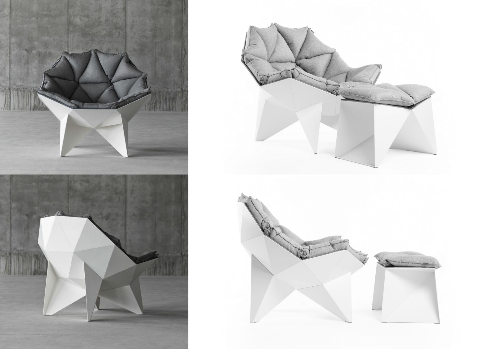}}
         </p>
      </div>
   </div>
   <div class="row mt-5">
      <div class="col-md-6">
         <p>
            {{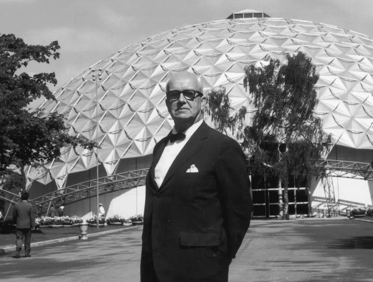}}
         </p>
      </div>
      <div class="col-md-6">
         <blockquote>
            <p>Jeodezik kubbe tasarımıyla ünlü Richard Buckminster Fuller</p>
         </blockquote>
         <p>
            Buckminster Fuller mimarlık alanında hiçbir zaman diploma almamış
            olsa da, devrimci yapılar tasarlayan bir mimar ve mühendisti. İkinci
            Dünya Savaşı sırasında Deniz Kuvvetlerinde geliştirdiği
            &quot;enerjik-sinerjik geometri&quot; teorilerine dayanan
            olağanüstü, küre benzeri bir yapı geliştirdi. Verimli ve ekonomik
            olan jeodezik kubbe dünyadaki konut kıtlığına olası bir çözüm olarak
            oluşturulmuştur.
         </p>
      </div>
   </div>

   <hr>
   <h2>Manifold</h2>
   <div class="row">
      <div class="col-md-6">
         <p>
            İngiliz tasarımcı Anthony Leyland&#39;a ait katlanmış çelikten
            yapılmış bir masa koleksiyonu olan ve Manifold adı verilen proje,
            sabitleme olmadan çeşitli şekillerde kesilip bükülen bir dizi
            sehpadan oluşuyor. Tasarımlar tek bir çelik sacdan oluşturulmuş ve
            toz boya ile kaplanmıştır. Serinin yaratıcısı Anthony Leyland
            matematikçi, sanatçı ve tasarımcı; çalışmalarında doğal, endüstriyel
            ve kavramsal nesnelerle yaratıcı süreci yönlendirmek için kuralları
            ve kısıtlamaları kullanır.
         </p>
         <blockquote>
            <p>
               &quot;Manifold, başka hiçbir bileşen olmadan tek başına kesip
               bükerek kare bir malzeme tabakasından bir sehpa oluşturmak için
               yapılan matematiksel bir oyunun sonucudur. Bu, kısıtlamalarına
               rağmen sınırsız sayıda tasarıma izin veren bir işlemdir&quot;
            </p>
         </blockquote>
         <p>
            Tasarımlarında açı veya eğimdeki küçük bir değişikliğin tasarımın
            kişiliğini nasıl dramatik bir şekilde değiştirebileceğini ortaya
            koymak istemiştir.
         </p>
      </div>
      <div class="col-md-6">
         <p>
            {{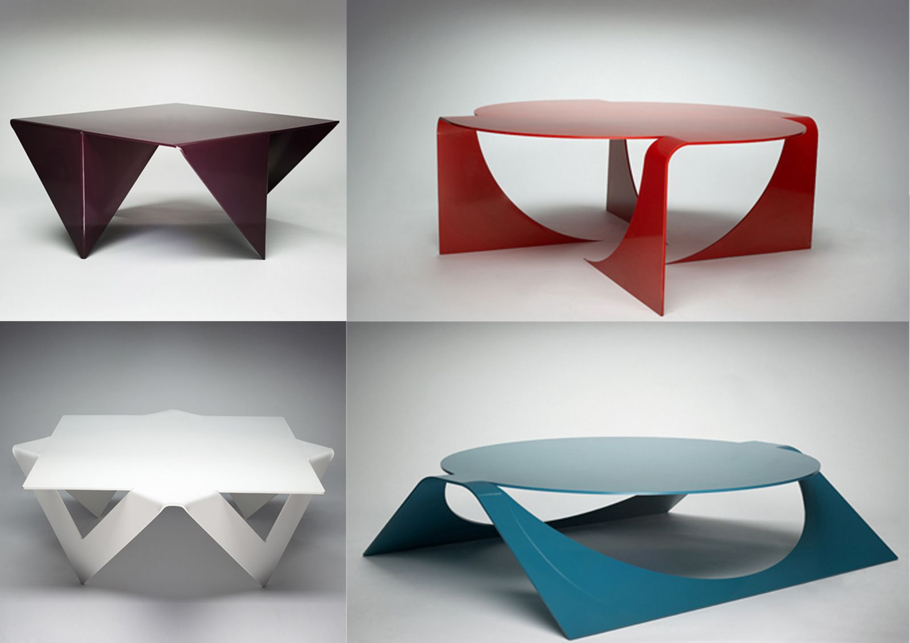}}
         </p>
      </div>
   </div>

   <hr>
   <h2>Nature of Material</h2>
   <div class="row">
      <div class="col-md-6">
         <p>
            İsrail&#39;deki Bezalel Sanat ve Tasarım Akademisi&#39;nden yeni
            mezun olan Ran Amitai, Bezalel&#39;de bir projesi olarak “Malzemenin
            Doğası”nı yarattı. Bakery Design&#39;ın bir parçası olan tasarımcı,
            önce kağıttan modellerle yola çıkarak oluşturduğu bu tasarım
            serisinde alüminyum levhanın zekice çözülmüş bir tasarımla nasıl bir
            ürüne dönüştüğünü gözler önüne seriyor.
         </p>
         <blockquote>
            <p>
               &quot;&#39;Malzemenin doğası&#39; bir dizi istiflenebilir
               mobilyadır. Her nesne, lazerle kesilmiş alüminyum levhadan
               katlanır ve daha sonra bir bükme kalıbı kullanılarak son şekle
               bükülür. Başlangıçta ağırlıklı olarak kağıtla çalıştım, küçük
               ölçekli modeller yaptım. Ne zaman bir potansiyel gördüğümde veya
               stabiliteyi kontrol etmem gerektiğinde, küçük kağıt modelini
               gerçek boyutlu bir sac levha modeline çevirdim. Projenin amacı,
               kıvrımlar gibi düz origamiyi doğal kıvrımlarla
               birleştirmektir.&quot;
            </p>
         </blockquote>
      </div>
      <div class="col-md-6">
         <p>
            {{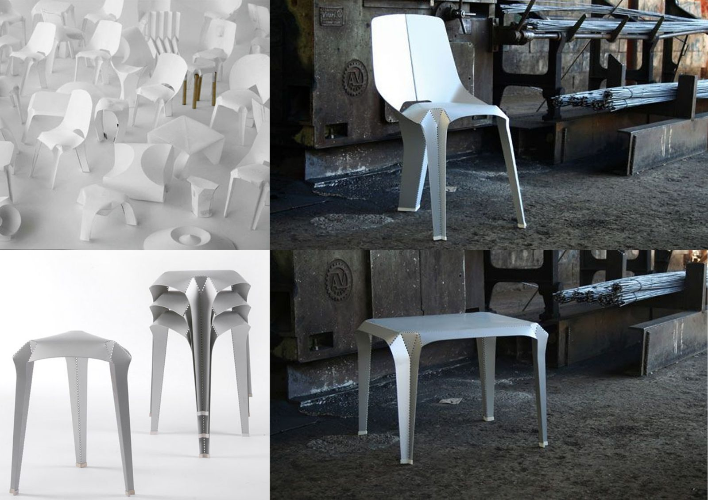}}
         </p>
      </div>
   </div>

   <hr>
   <h2>Origami Sandalye</h2>
   <div class="row">
      <div class="col-md-6">
         <p>
            Bu sandalyenin ilham kaynağı geleneksel Japon kağıt katlama
            kültüründen geliyor: Origami. Hollandalı mimar Jan Brouwer ve ürün
            tasarımcısı Chris Karthaus&#39;un Origami sandalyesi çarpıcı
            derecede incedir ve lazerle kesilmiş, katlanmış ve cıvatalanmış 3 mm
            (geri dönüştürülmüş) alüminyum tabakadan verimli bir şekilde
            yapılmıştır. Sırt kısmı cıvatalarından çıkarıldığında sandalye bir
            tabure haline gelir. Üç alüminyum bileşenin her biri için farklı
            renkler seçilebilir, böylece bol renk kombinasyonuna izin verilir.
         </p>
      </div>
      <div class="col-md-6">
         <p>
            {{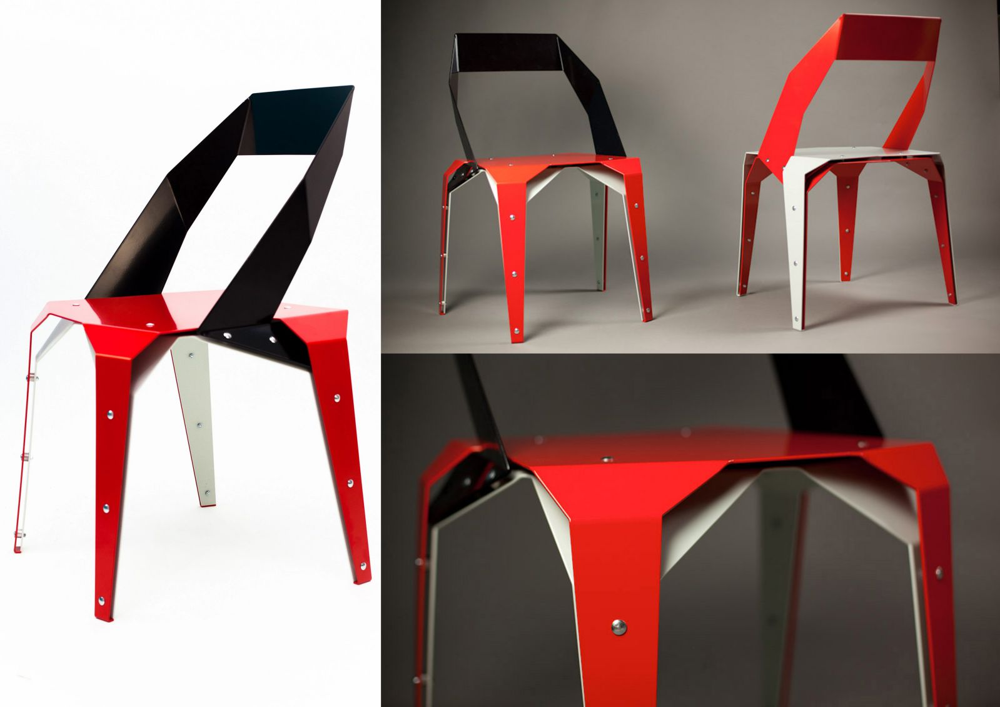}}
         </p>
      </div>
   </div>

   <hr>
   <h2>Endüstriyel Origami</h2>
   <div class="row">
      <div class="col-md-6">
         <p>
            Max Durney tarafından 2002 yılında tasarlanan Endüstriyel Origami,
            ucuz ve basit olmasına karşın son derece güçlü bir tasarım inşa
            etti. Alüminyum ve çelik levhayı katlayarak oluşturduğu bu tasarım,
            önceden şekillendirilmiş ve delinmiş levhanın katlanması sonucu
            oluşur. Max&#39;ın kurguladığı katla ve inşa et yöntemi, kaynak ve
            cıvatalama işlemini ortadan kaldırır. Bu teknikle malzemeden yüzde
            20-50 arası, iş gücünden ise yüzde 25-45 oranında tasarruf etmeyi
            hedefler. Çünkü parçalar düz levhalar halinde taşındığından az yer
            kaplamakta ve boyama işlemine tabii tutulacaksa düz yüzeyleri
            boyayarak en az kayıpla levha renklendirilmektedir.
         </p>
         <p>Londra merkezli Çevre Teknolojileri Fonu ortağı Patrick Sheehan:</p>
         <blockquote>
            <p>
               &quot;Endüstriyel Origami, ürünlerin tasarlanma ve üretilme
               şeklini derinden değiştiriyor&quot;
            </p>
         </blockquote>
      </div>
      <div class="col-md-6">
         <p>
            {{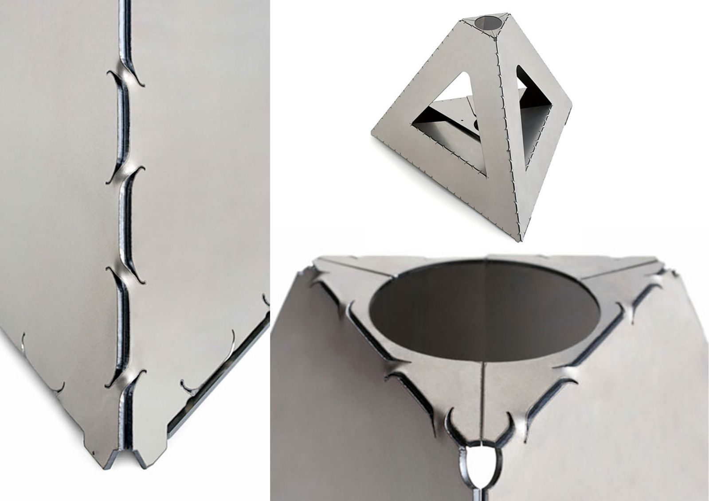}}
         </p>
      </div>
   </div>

   <button
   class="btn markutbtn"
   data-target="#my-collapse"
   data-toggle="collapse"
   aria-expanded="false"
   aria-controls="my-collapse"
   >
   Kaynaklar
   </button>
   <div id="my-collapse" class="collapse">
   <pre> <small><code>  
    https://en.wikipedia.org/wiki/Sheet_metal

    https://fractory.com/sheet-metal/
    
    https://geomiq.com/sheet-metal-design-guide/
    
    https://www.dehametal.com/levha-saclar/
    
    https://bigsee.eu/profiles/novague-design/
    
    https://www.archiproducts.com/en/news/edge-chair-by-novague-inspired-by-origami_29998
    
    https://futildesign.com/portfolio/chaise-gb/
    
    https://odesd2.com.ua/en/furniture/lounge/q1_lounge_chair
    
    https://www.thoughtco.com/r-buckminster-fuller-architect-and-philosopher-177846
    
    http://www.blogarredo.it/index.php?m=200611
    
    http://www.blogarredo.it/index.php?m=200611
    
    https://tur.thehomelifemag.com/manifold-by-anthony-leyland
    
    https://www.designboom.com/design/ran-amitai-nature-of-material/
    
    https://vurni.com/brouhaus-origami-chair-stool-combo/
    
    https://www.core77.com/posts/16549/Killer-new-production-method-Metal-origami
    
    https://design-milk.com/max-lamb/
     </code></small></pre>
   </div>
</div>
